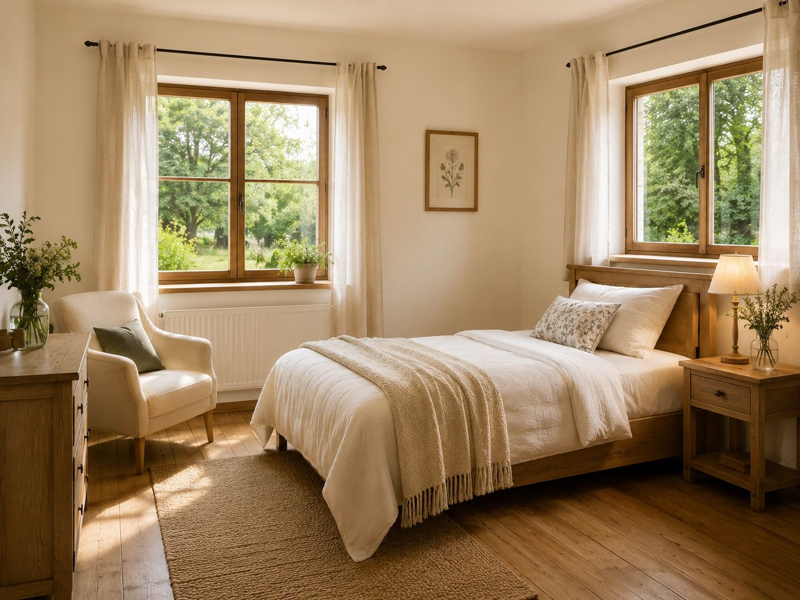
Jabłoń
Dwuosobowy, na parterze, dwa okna na sad. Łóżko 160 cm, łazienka własna.
190 złza dobę / 2 osoby
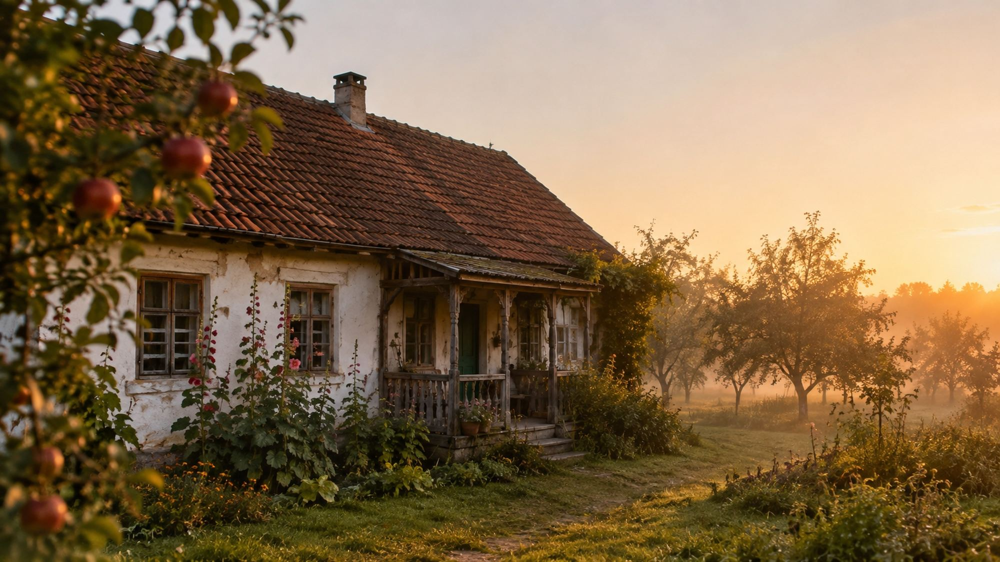
Siedlisko · 9 km od Łowicza
Stuletni dom w środku starego sadu. Nie ma tu animacji, basenu ani wieczornej dyskoteki. Jest kuchnia, z której można korzystać, hamak między jabłoniami i cisza, którą słychać.
Sześćdziesiąt lat później część drzew jeszcze rodzi, część została dla ptaków. Dom stoi na skraju, między szpalerem lip a drogą, którą przejeżdżają cztery samochody dziennie.
Prowadzimy to we dwoje. Rano jest chleb, jajka od sąsiadki i dżem z tego, co akurat dojrzało. Reszta dnia należy do Was — możecie zniknąć w sadzie, pojechać nad Bzurę albo siedzieć na werandzie i nic nie robić. Nikt nie zapyta, czy się dobrze bawicie.
Przyjmujemy maksymalnie osiem osób naraz. Psy tak, po wcześniejszym ustaleniu. Wi-Fi jest, zasięg bywa.
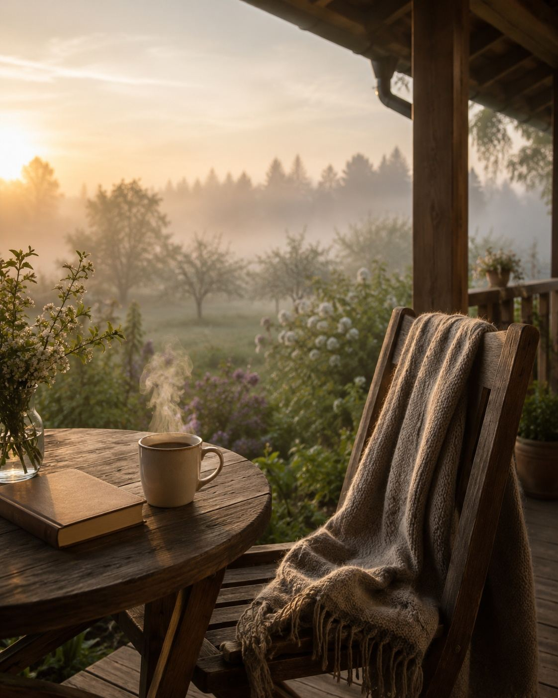
Kubki są robione przez Marię. Można kupić, można stłuc — bywało różnie.
Siedlisko wygląda inaczej w maju i inaczej w listopadzie. Zamiast pisać, że „o każdej porze roku jest pięknie", pokazujemy, co się tu właśnie dzieje. Dotknij miesiąca.
Pełnia kwitnienia jabłoni, sad brzęczy tak, że słychać go z drogi.
Ceny za dobę, za pokój, ze śniadaniem. Bez dopłat za pościel, ręczniki i „opłatę serwisową".

Dwuosobowy, na parterze, dwa okna na sad. Łóżko 160 cm, łazienka własna.
190 złza dobę / 2 osoby
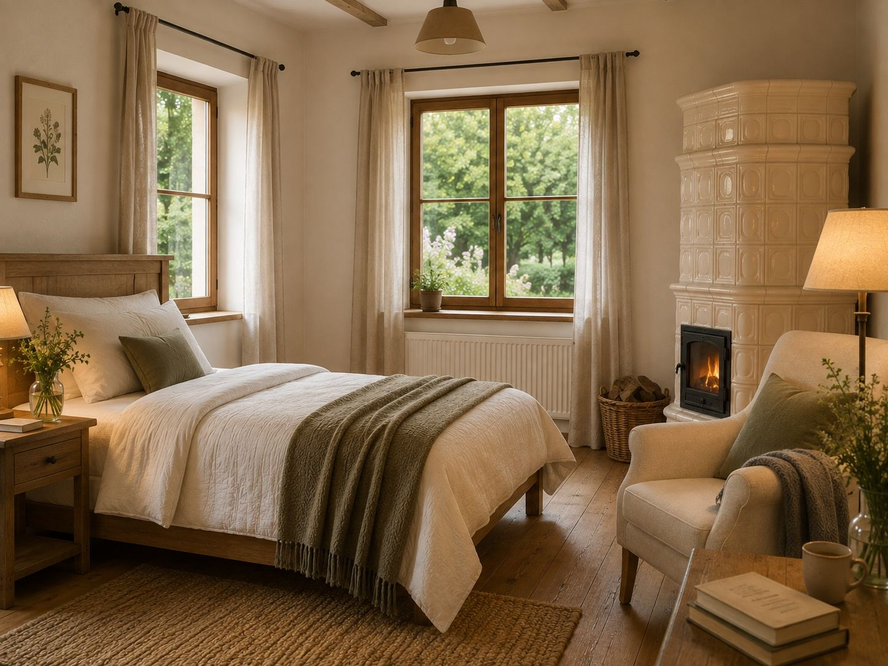
Dwuosobowy z dostawką, piec kaflowy, okno na szpaler lip. Łazienka własna.
210 złza dobę / 2–3 osoby
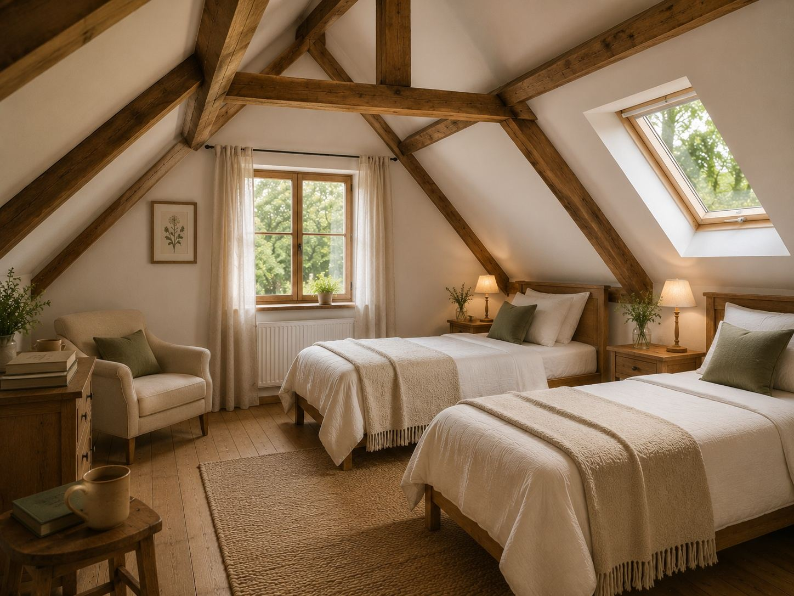
Czteroosobowy, skosy, dwa łóżka i antresola. Rodzinny, głośny, najweselszy.
280 złza dobę / do 4 osób
Odległości liczone od naszej bramy, samochodem albo pieszo. Bez naciągania.
Pieszo przez sad i miedzę. Wieczorem bobry, rano mgła nad wodą.
Otwarte 6:00–18:00, w niedzielę do 12:00. Chleb wychodzi około siódmej.
Piaszczysty brzeg, płytko przy samym wejściu. W lipcu ciepła jak zupa.
Bazylika, kolegiata i muzeum stroju łowickiego. Targ we wtorki i piątki.
Park romantyczny i pałac Radziwiłłów. Na cały dzień, najlepiej we wrześniu.
Wszystkie zrobione tutaj, telefonem, w ciągu ostatniego roku.
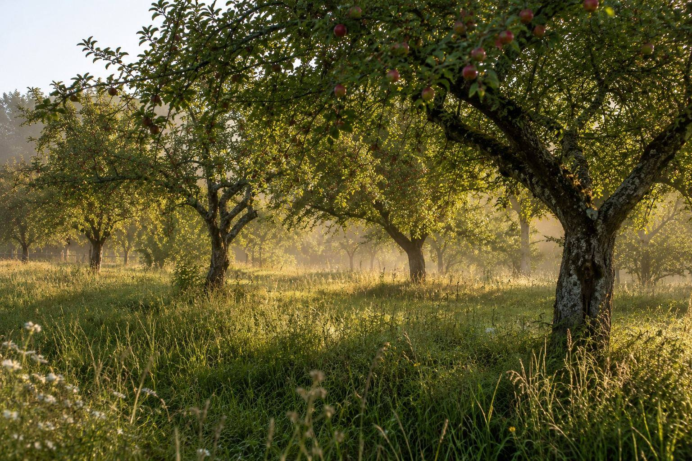
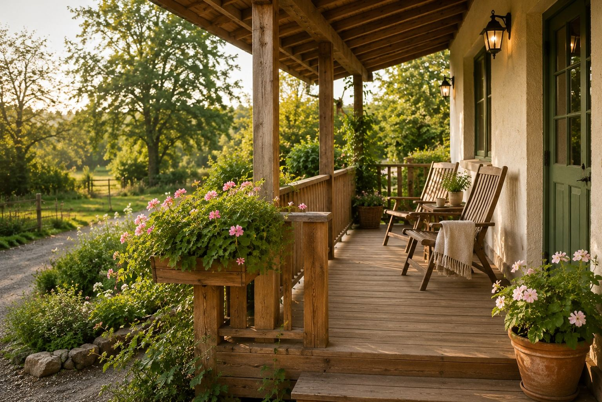
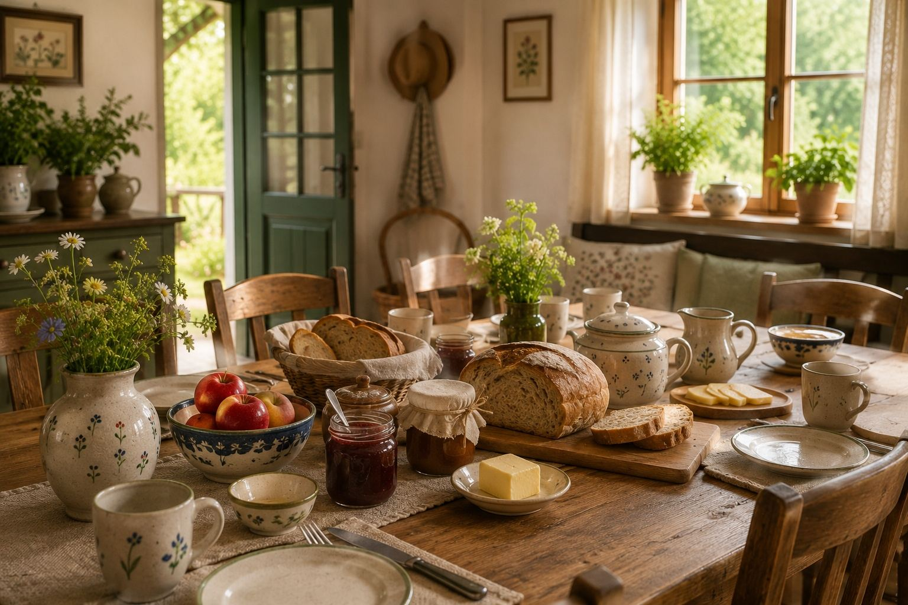
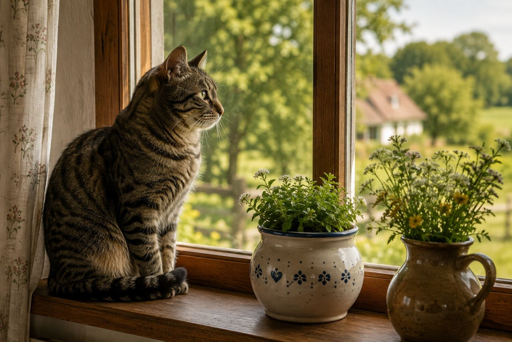
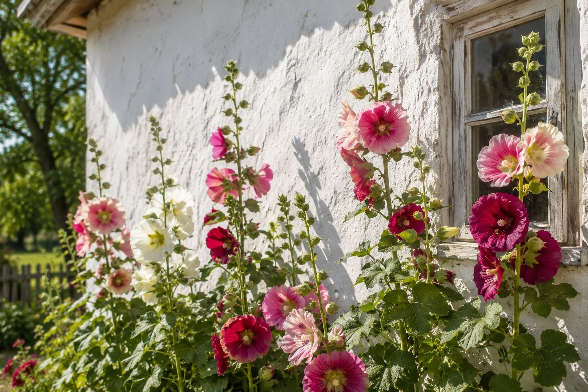
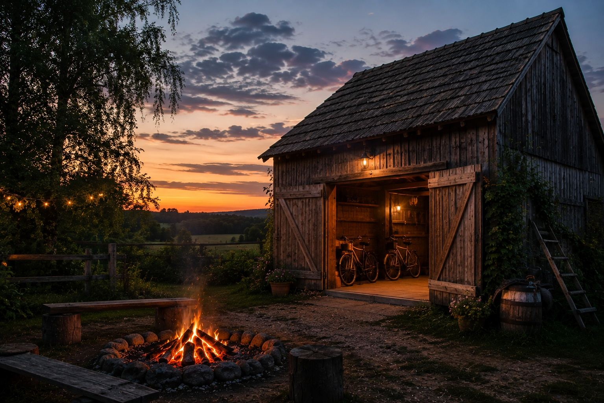
Nie mamy systemu rezerwacji online. Zadzwońcie albo napiszcie — odpowiadamy tego samego dnia, chyba że jesteśmy w sadzie.
Jadąc od Łowicza drogą na Zduny, za mostem w prawo i 2 km polną drogą. Ostatnie 300 metrów to szuter — osobówka da radę, ale powoli.